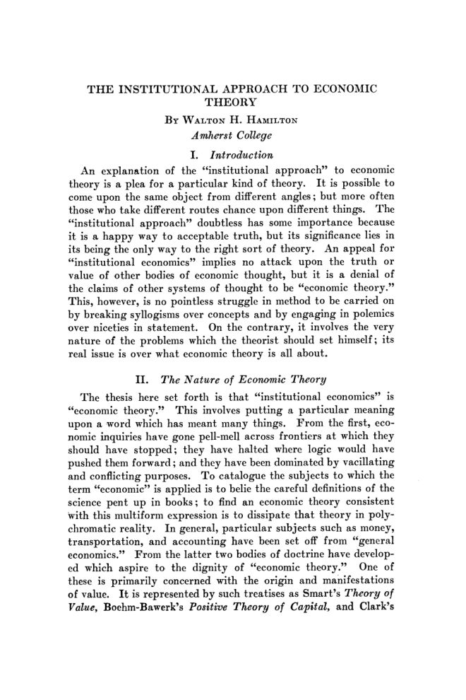

Hamilton, 1918: a economia institucional pede o nome de teoria
Leitura: 7 min
Em Richmond, Walton H. Hamilton sustenta que só a economia institucional merece o nome de teoria econômica e propõe cinco testes para qualquer teoria. A discussão reúne Stewart, Haney, Anderson e Clark.


Walton H. Hamilton, do Amherst College, começa avisando que defender a “abordagem institucional” não é atacar a verdade de outras correntes, mas negar a elas o direito ao nome de “teoria econômica”. A disputa, diz, não é sobre método, travada a golpes de silogismo, mas sobre os problemas que o teórico deve se propor.
O texto foi lido na tarde de 28 de dezembro de 1918, em Richmond, numa sessão conjunta com a American Sociological Society, ao lado dos trabalhos de J. M. Clark e de William F. Ogburn. É curto, cerca de dez páginas, e tem forma de manifesto: uma tese, cinco testes e uma conclusão sobre o futuro.
“Sua verdadeira questão é sobre aquilo de que trata a teoria econômica.” (“Its real issue is over what economic theory is all about.”)
Que duas teorias disputavam o título?
Hamilton observa que a economia sempre atravessou fronteiras que deveria respeitar e parou onde a lógica a mandaria seguir. Separados os campos particulares, como moeda, transportes e contabilidade, restam dois corpos de doutrina que aspiram ao título de teoria. Um trata da origem e das manifestações do valor, como Smart, Böhm-Bawerk e John Bates Clark. O outro trata dos costumes e convenções que determinam a natureza do sistema econômico: Adam Smith sobre o mercantilismo, Whately sobre como a concorrência organiza a indústria, Mill sobre o Estado; entre os modernos, Cannan sobre a propriedade, Veblen sobre a técnica das máquinas e Hobson sobre trabalho e bem-estar.
Os dois, reconhece, têm muito em comum: linhagem clássica, origem em problemas práticos e a tendência de misturar julgamentos de valor à exposição. A teoria do valor só recentemente se livrou da associação formal com o laissez-faire, e mesmo assim termos como “utilidade” e “produtividade” carregam juízos sobre os arranjos existentes. A diferença está na concepção da ordem econômica.
Por que a teoria do valor não bastaria?
Hamilton admite que a teoria do valor é a mais sutil, geral e articulada da disciplina, tem o prestígio da doutrina antiga e é reconhecida no uso comum como “teoria econômica”. Mesmo assim, diz, a pretensão deve ser recusada. À medida que a concepção da ordem econômica se ampliou, ela estreitou o seu problema, até ficar reduzida a explicar o valor e as formas de renda. Suas conclusões sobre a sociedade industrial são indiretas e vêm da herança clássica da livre concorrência. Seria um ramo especializado, com tão pouco direito ao nome quanto a teoria da moeda ou da contabilidade.
A economia institucional, ao contrário, pretende descrever a ordem econômica em geral. Nas palavras de Edwin Cannan que Hamilton cita, quer explicar por que todos estão tão bem quanto estão e por que alguns estão melhor que outros. Isso exige ir além da compra e venda até as peculiaridades do sistema que permitem que elas ocorram em certos termos e não em outros: convenções, costumes, hábitos de pensamento e modos de fazer.
Quais eram os cinco testes?
O primeiro teste é a unidade. A economia se espalhava da teoria do valor à moeda, aos impostos e aos transportes, e daí à publicidade e aos seguros, cada campo com método e pessoal próprios. A mecânica da formação do valor não tem como juntar isso; a descrição da organização econômica mostra o lugar de cada parte no todo.
O segundo é a relevância para o controle. Não cabe à economia julgar propostas práticas, diz Hamilton, mas ela pode reunir com imparcialidade os fatos e os princípios necessários para tratá-las. Smith partiu da relação entre organização econômica e riqueza nacional, Ricardo das controvérsias sobre o papel-moeda, e a escola austríaca, da refutação do socialismo marxista. A teoria neoclássica trata de como os valores surgem no mercado, mas não da organização desse mercado nem da distribuição de oportunidades, propriedade e lazer que determina as rendas.
O terceiro decorre do segundo: se o controle se exerce mudando os arranjos da vida econômica, o objeto da teoria são as instituições. Quem quer lidar com a inflação precisa entender o sistema de preços e o crédito; quem quer mudar a distribuição da renda precisa conhecer as convenções da concorrência, do contrato, da propriedade e da herança. Não basta dizer que cada um recebe o valor de seus serviços: mudadas as regras, continuará recebendo o valor dos serviços, mas talvez outra soma.
O quarto é o processo. A teoria do valor trata seus fenômenos como substâncias acabadas e só admite variações de quantidade, resolvidas em equilíbrios. Concorrência, propriedade e sistema salarial, ao contrário, mudam por dentro: uma lei, uma decisão judicial ou uma guerra alteram o conteúdo do direito de propriedade. Hamilton prefere o termo “genético” a “histórico”, desde que signifique explicar o que uma coisa é pelo modo como veio a ser.
Que psicologia a teoria deveria usar?
O quinto teste é uma teoria aceitável do comportamento. Instituições, diz Hamilton, são apenas métodos convencionais de conduta de grupos ou de pessoas em certas situações. A economia neoclássica herdou do século XVIII o indivíduo que conhece as alternativas e busca o maior ganho material medido em dinheiro. Isso falha porque o interesse próprio é um feixe de valores em conflito, porque o que se faz hoje limita o que se fará amanhã, porque instinto e impulso pesam na conduta e, sobretudo, porque o arranjo institucional em que se vive molda o comportamento.
Hamilton reconhece que a teoria institucional também está em processo e lista as fontes de que pode se servir: os clássicos ingleses, Marshall, Pigou e Chapman, Marx e Lassalle sem as propostas de reforma, a “escola do bem-estar” inglesa de Webb, Hobson, Cannan, Tawney e Clay, e, nos Estados Unidos, H. C. Adams, Cooley, Veblen e Mitchell. Talvez seja preciso uma década de tentativa e erro para chegar a um corpo consistente, que nunca terá a precisão da teoria neoclássica.
“Ela precisa encontrar na relevância e na verdade um substituto para a precisão formal.” (“It must find in relevancy and truth a substitute for formal precision in statement.”)
Como o texto foi recebido?
Na discussão, W. W. Stewart concordou com Hamilton e Clark e acrescentou que a abordagem institucional precisaria do método estatístico para não ficar em hipóteses inverificáveis. Lewis H. Haney viu na proposta a repetição do que a escola histórica defendera cinquenta anos antes e duvidou que ela produzisse leis. B. M. Anderson Jr. perguntou se pretendiam abandonar a análise estática e defendeu uma síntese entre estática e dinâmica. Clark, na réplica, disse que ninguém propusera descartar as doutrinas estáticas.
“Uma descrição sempre mutável de um ambiente sempre mutável.” (“an ever changing description of an ever changing environment.”)
Na minha leitura
Na minha leitura, o argumento mais forte de Hamilton é o terceiro teste. Dizer que cada fator recebe o valor de seus serviços pode ser verdadeiro e, ainda assim, nada dizer sobre a distribuição, se as regras de propriedade, contrato e herança que fixam esse valor ficam fora da análise. É a distinção entre explicar um preço dado as regras e explicar as regras.
A objeção de Haney e Anderson também acerta num ponto de método: sem algum modelo de equilíbrio, a descrição das instituições não diz o que acontece quando uma regra muda. A sugestão de Stewart, medir os processos, aponta para onde a disciplina iria depois, combinando instituições, dados e modelos.
Glossário
- Teoria do valor
- corpo de doutrina que explica a formação dos preços e das rendas no mercado, como em Böhm-Bawerk e J. B. Clark.
- Economia institucional
- nos termos de Hamilton, a teoria que descreve a ordem econômica a partir de costumes, convenções e arranjos legais.
- Método genético
- explicar o que uma instituição é pelo modo como veio a ser, e não pela narrativa de fatos passados.
- Estática econômica
- análise de equilíbrios em que só as quantidades variam.
Fontes
- The Institutional Approach to Economic Theory — Walton H. Hamilton, Amherst College (pp. 309–318). JSTOR · Internet Archive (PDF)
- Edição completa, com os demais artigos: Nº 156 do Arquivo.
Documento em domínio público (EUA, publicado antes de 1931), via JSTOR Early Journal Content e Internet Archive. Resumo e comentário do autor deste site, sem afiliação com a American Economic Association. Encontrou um erro? Escreva: a correção é publicada no próprio texto, com data.
← Fisher, 1918: a quem o economista deve servir? ↑ Nº 156 · Richmond, 1918: economistas no serviço público e a reconstrução